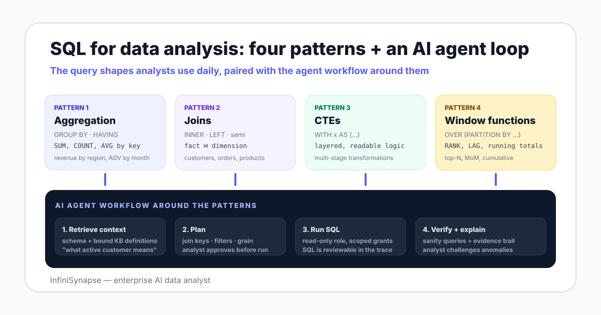

Three forces keep SQL central to data analysis. First, the analytical warehouses analysts touch every day — PostgreSQL, MySQL, Snowflake, BigQuery, Databricks — all expose a SQL interface as the contract. Second, SQL is declarative: you describe the result you want, the engine plans the execution. That separation survived a generation of "SQL is dead" claims because writing readable queries scales better than writing imperative pipelines for analytical work. Third, every AI assistant that touches a database generates SQL under the hood. Reading the generated query is how an analyst confirms the answer is real.
The companion AI database query pillar guide covers the broader shift in how questions are asked of a database. This page stays on the SQL itself — what an analyst actually types, where each pattern earns its keep, and where an agent steps in to draft.

The worked examples below use a small e-commerce-style schema. Four tables, joinable by clear keys, broad enough to cover the patterns without becoming a textbook:
| Table | Grain | Key columns | Typical analysis use |
|---|---|---|---|
customers | One row per customer | customer_id, signup_date, region | Cohorts, retention, segmentation |
orders | One row per order | order_id, customer_id, order_date, total_amount | Revenue, AOV, repeat purchase |
order_items | One row per item in an order | order_id, product_id, quantity, unit_price | Mix, category share, cross-sell |
products | One row per product | product_id, category, cost | Margin, category rollups |
Two important properties of this schema show up in real datasets: order_items fans out from orders (one-to-many), and customers sometimes have no orders (left-join territory). Both will bite an unprepared analyst on the third example.
This is the workhorse. Roll up rows, summarize numeric columns, filter aggregates. The shape every analyst writes ten times a day:
SELECT region, COUNT(*) AS customers, SUM(total_amount) AS revenue
FROM customers c
JOIN orders o ON o.customer_id = c.customer_id
WHERE o.order_date >= DATE '2026-01-01'
GROUP BY region
HAVING SUM(total_amount) > 100000
ORDER BY revenue DESC;Two things to remember. WHERE filters rows before aggregation. HAVING filters groups after. Mix them up and you either lose rows you wanted or compute over rows you should have dropped.
Analytics joins are usually between a fact table (orders, events) and one or more dimension tables (customers, products). Three rules cover most cases:
INNER JOIN when you only want matches in both.LEFT JOIN when you need to preserve rows from one side and accept NULLs on the other — common with "customers who have not ordered yet".customer_id, write the predicate explicitly and add a sanity COUNT before and after the join.-- Customers who signed up but never placed an order
SELECT c.customer_id, c.signup_date
FROM customers c
LEFT JOIN orders o ON o.customer_id = c.customer_id
WHERE o.order_id IS NULL;The moment an analytic question has two transformation stages, reach for a CTE. They name intermediate results, document intent, and survive code review better than nested subqueries.
WITH monthly_revenue AS (
SELECT DATE_TRUNC('month', order_date) AS month,
customer_id,
SUM(total_amount) AS rev
FROM orders
GROUP BY 1, 2
),
ranked AS (
SELECT month, customer_id, rev,
RANK() OVER (PARTITION BY month ORDER BY rev DESC) AS r
FROM monthly_revenue
)
SELECT month, customer_id, rev
FROM ranked
WHERE r <= 10
ORDER BY month, r;That query — top 10 customers by month — is also the first useful piece of evidence for picking a CTE over a subquery. Read the version with the CTE, then imagine the subquery version. The CTE wins on every dimension that matters to a reviewer.
Window functions look at a group of rows without collapsing them. Five shapes cover most needs:
| Window function | Shape it answers | Example |
|---|---|---|
RANK() / DENSE_RANK() | Top-N per group | Top 5 products per region |
ROW_NUMBER() | First / latest per partition | First order per customer |
SUM() OVER (... ORDER BY ...) | Running total | Cumulative revenue by month |
LAG() / LEAD() | Compare to previous / next row | Month-over-month change |
NTILE(n) | Bucket into n equal groups | Customer revenue deciles |
-- Month-over-month revenue change per region
SELECT region, month, revenue,
revenue - LAG(revenue) OVER (PARTITION BY region ORDER BY month) AS mom_change
FROM region_monthly_revenue;WITH cohorts AS (
SELECT customer_id, DATE_TRUNC('month', signup_date) AS cohort_month
FROM customers
)
SELECT c.cohort_month,
DATE_TRUNC('month', o.order_date) AS order_month,
SUM(o.total_amount) AS revenue
FROM cohorts c
JOIN orders o ON o.customer_id = c.customer_id
GROUP BY 1, 2
ORDER BY 1, 2;That output feeds a triangle-shaped cohort chart with months on both axes. The analyst's judgment call is choosing the cohort grain (signup month vs week vs quarter) and the value (revenue vs orders vs items).
WITH product_region_rev AS (
SELECT c.region, p.product_id, p.category,
SUM(oi.quantity * oi.unit_price) AS rev
FROM customers c
JOIN orders o ON o.customer_id = c.customer_id
JOIN order_items oi ON oi.order_id = o.order_id
JOIN products p ON p.product_id = oi.product_id
GROUP BY 1, 2, 3
)
SELECT region, product_id, category, rev
FROM (
SELECT region, product_id, category, rev,
RANK() OVER (PARTITION BY region ORDER BY rev DESC) AS r
FROM product_region_rev
) ranked
WHERE r <= 5
ORDER BY region, r;WITH first_order AS (
SELECT customer_id, MIN(order_date) AS first_order_date
FROM orders GROUP BY customer_id
),
joined AS (
SELECT c.customer_id,
DATE_TRUNC('month', c.signup_date) AS cohort_month,
f.first_order_date,
CASE WHEN f.first_order_date IS NULL THEN 0 ELSE 1 END AS converted
FROM customers c
LEFT JOIN first_order f ON f.customer_id = c.customer_id
)
SELECT cohort_month,
COUNT(*) AS signups,
SUM(converted) AS converted,
ROUND(100.0 * SUM(converted) / COUNT(*), 2) AS conversion_pct
FROM joined
GROUP BY cohort_month
ORDER BY cohort_month;The LEFT JOIN is the load-bearing detail. Without it, customers who never ordered drop out of the COUNT and your conversion percentage inflates silently.
WITH region_monthly AS (
SELECT c.region,
DATE_TRUNC('month', o.order_date) AS month,
SUM(o.total_amount) AS revenue
FROM customers c
JOIN orders o ON o.customer_id = c.customer_id
GROUP BY 1, 2
)
SELECT region, month, revenue,
LAG(revenue, 12) OVER (PARTITION BY region ORDER BY month) AS revenue_yoy,
ROUND(100.0 * (revenue - LAG(revenue, 12) OVER (PARTITION BY region ORDER BY month))
/ NULLIF(LAG(revenue, 12) OVER (PARTITION BY region ORDER BY month), 0), 2)
AS yoy_pct
FROM region_monthly
ORDER BY region, month;NULLIF guards against divide-by-zero in the first 12 months where there is no prior-year value. Junior queries often forget that and crash the dashboard the day the chart renders the first month.
| Topic | PostgreSQL | MySQL | Snowflake / BigQuery |
|---|---|---|---|
| Date truncation | DATE_TRUNC('month', x) | DATE_FORMAT(x, '%Y-%m-01') | DATE_TRUNC('month', x) / DATE_TRUNC(x, MONTH) |
| String concat | a || b | CONCAT(a, b) | a || b / CONCAT(a, b) |
| Top-N per group | Window + filter | Window + filter (8.0+) | Window + QUALIFY |
| JSON path | j ->> 'key' | JSON_EXTRACT(j, '$.key') | j:key / JSON_VALUE |
| Boolean type | Native | Tinyint(1) | Native |
For deeper warehouse-specific patterns see the PostgreSQL data analysis tools guide, the MySQL data analysis tools guide, and the Snowflake data analyst guide. Each one walks the dialect-specific edges.
AI data agents do not erase SQL — they restructure the workflow around it. On the BIRD benchmark, human engineers reach 92.96% execution accuracy and large models trail by a wide margin without a retrieval and verification loop. That gap is why an agent is structured as a system that dynamically directs its own processes and tool usage, not a one-shot text-to-SQL prompt.
What the analyst actually does day-to-day shifts in three places:
| Phase | Without an AI agent | With an AI agent |
|---|---|---|
| Drafting | Type the join, the GROUP BY, the window function from scratch | Describe the question; agent drafts a plan and the SQL |
| Reviewing | Self-review and a peer review of the SQL | Review the plan, the join keys, and the SQL the agent generated |
| Verifying | Spot-check the result; ad hoc sanity queries | The agent runs verification queries automatically; analyst challenges anomalies |
The AI data analyst explained page goes deeper on the role split. The AI data analyst job description page describes how teams hire for the new shape.
Three things stay with the human and will stay with the human for the next planning cycle: framing the question, choosing the grain (which counts as a customer, which orders count, which timezone), and defending the number. An agent can draft the SQL that answers "monthly active users by region" in seconds; an analyst still decides whether MAU means a logged-in session, an order placed, or an event fired.
The newest differentiator inside the AI category is what InfiniSynapse calls database + knowledge base binding. Each connection is paired with a curated knowledge base of business definitions — what active customer means, which status codes represent a paid order, which keys roll up to which business cluster. The agent retrieves from the bound knowledge base as a tool call before drafting SQL, so the generated query is grounded in the team's actual definitions, not the model's prior.
orders to order_items without remembering the one-to-many turns "revenue" into "revenue times items per order". Always check row count before and after a new join.WHERE status != 'cancelled' silently excludes orders where status is NULL. Use (status IS NULL OR status != 'cancelled') if NULL means "not yet set".SELECT columns not in the GROUP BY; the result is whatever row the engine happened to pick. ANSI strict mode and modern MySQL reject this — turn it on.SELECT * in production analysis. The schema drifts, a new column appears, and the dashboard renders one extra column nobody documented. Name the columns.NULLIF in ratio metrics. Conversion rate without a guard divides by zero the first month a cohort has no signups. Wrap every divisor in NULLIF(x, 0) in analytical queries.SQL fluency stops being about typing speed and starts being about review judgment. Read the query, defend the join key, own the number.
Connect a PostgreSQL, MySQL, Snowflake, or Supabase database read-only, seed a small knowledge base of business definitions, and ask one open-ended question. Watch the plan, the SQL, and the verification step before deciding whether agentic SQL belongs in your stack.
Try InfiniSynapse onlineLast updated: 2026-06-28 · Next scheduled review: 2026-09-28
The patterns and worked examples on this page are grounded in PostgreSQL and MySQL official documentation, public benchmarks (BIRD, Spider), Anthropic's published agent research, the NIST AI Risk Management Framework, and field experience running SQL across real analytics schemas. Examples were tested against PostgreSQL 16 and Snowflake; MySQL and BigQuery equivalents are noted where syntax diverges.
Conflict of interest: InfiniSynapse publishes this guide and sells an enterprise AI data analyst that generates SQL. To reduce bias, the page emphasizes patterns and worked examples first, treats AI agents as a workflow shift rather than a SQL replacement, and links to external benchmarks and standards for every numeric claim.
Update cadence: Reviewed every 90 days for syntax accuracy, dialect changes, benchmark figures, and schema consistency.